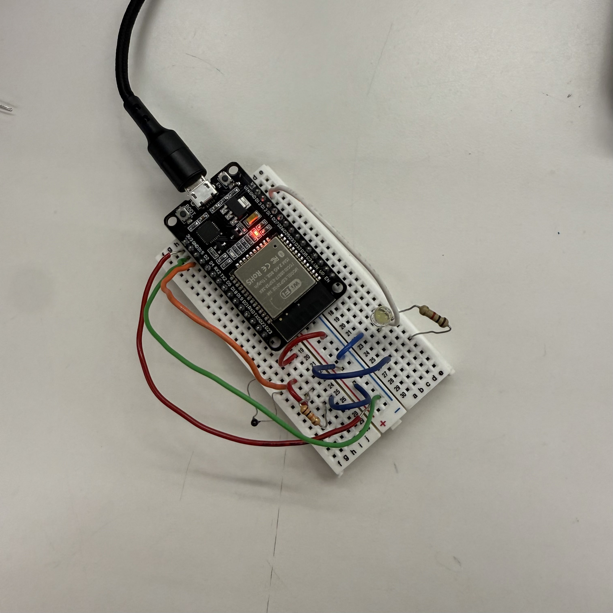

<div class="textcontainer">
<p class="margin"> </p>
<h3>week 6: electronic inputs</h3>
<h4>assignment 1: capacitive sensor</h4>
<p>
for this assignment, i used a copper plates and water to measure capacitance. i saw that
the more water i added between the copper plates, the higher the capacitance reading. after
gathering some data points and plotting them, i saw a nonlinear relationship between the
capacitance reading and the amount of water added.
</p>
<div class="center-row">
</div>
<h5>data:</h5>
<div class="flexrow">
<div style="width:15%; margin:10px;">
</div>
<div style="width:65%; margin:10px;">
</div>
</div>
<h4>assignment 2: thermistor temperature sensor</h4>
<p>for this assignment, i used a thermistor to measure temperature and
connected an LED that turns on when the temperature exceeds a threshold.</p>
<h5>initial code:</h5>
<div class="code-block">int ThermistorPin = 15;
int Vo;
int LedPin = 13;
int threshold = 1700;
void setup() {
Serial.begin(9600);
pinMode(LedPin, OUTPUT);
}
void loop() {
Vo = analogRead(ThermistorPin);
Serial.print("Temperature: ");
Serial.println(Vo);
if (Vo > threshold) {
digitalWrite(LedPin, HIGH);
} else {
digitalWrite(LedPin, LOW);
}
delay(500);
}
</div>
<p class="margin"> </p>
<div class="d-flex flex-row">
<div class="col-6" style="margin:10px;">
<p class="caption">thermistor circuit</p>
</div>
<div class="col-6" style="margin:10px;">

<p class="caption">thermistor circuit with LED</p>
</div>
</div>
<div class="center-row">
</div>
<p>i decided to add an LED that turns on when the temperature reading is above 1700,
which is roughly ___ degrees Celsius. since room temperature is around 1960 and my body
temperature is 1570, the LED should turn off when i touch the thermistor.
</p>
<div class="center-row">
<video width="70%" controls>
<source src="input4.mov">
Your browser does not support the video tag.
</video>
</div>
<p class="caption">thermistor with LED indicator</p>
<h5>data collection:</h5>
<p>i then plotted some additional points and created a line of best fit for mapping
the ESP32 readings to temperature in degrees fahrenheit.
</p>
TODO!
<h5>improved code with class structure:</h5>
<div class="code-block">class Thermistor {
int pin;
public:
Thermistor(int inputPin) {
pin = inputPin;
Serial.begin(9600);
}
int readValue() {
return analogRead(pin);
}
};
class Led {
int pin;
public:
Led(int inputPin) {
pin = inputPin;
pinMode(pin, OUTPUT);
digitalWrite(pin, LOW);
}
void on() {
digitalWrite(pin, HIGH);
}
void off() {
digitalWrite(pin, LOW);
}
};
Thermistor myThermistor(15);
Led myLed(13);
unsigned long lastCheck = 0;
const unsigned long interval = 500;
const int threshold = 1700;
void setup() {
Serial.begin(9600);
}
void loop() {
unsigned long now = millis();
if (now - lastCheck >= interval) {
lastCheck = now;
int reading = myThermistor.readValue();
Serial.print("Thermistor reading: ");
Serial.println(reading);
if (reading > threshold) {
myLed.on();
} else {
myLed.off();
}
}
}
</div>
</div>